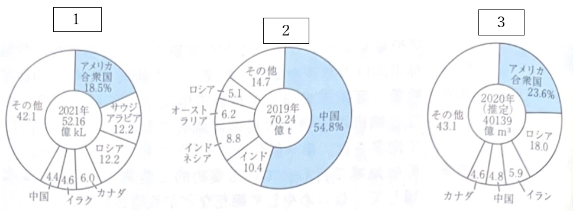
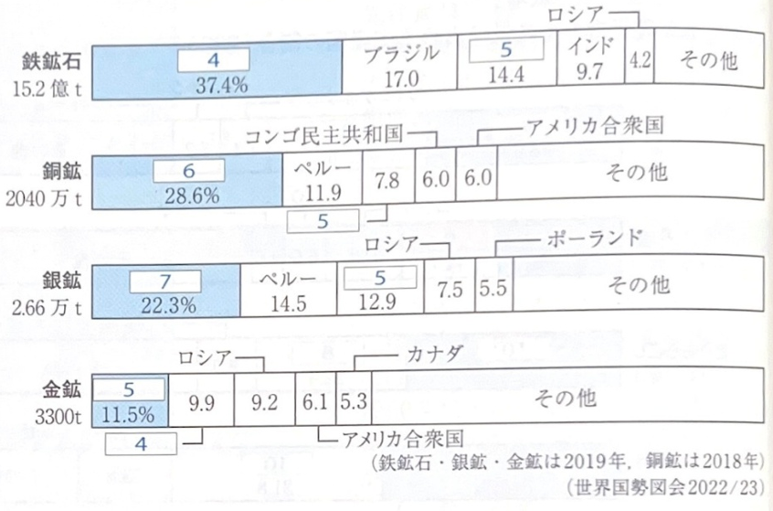
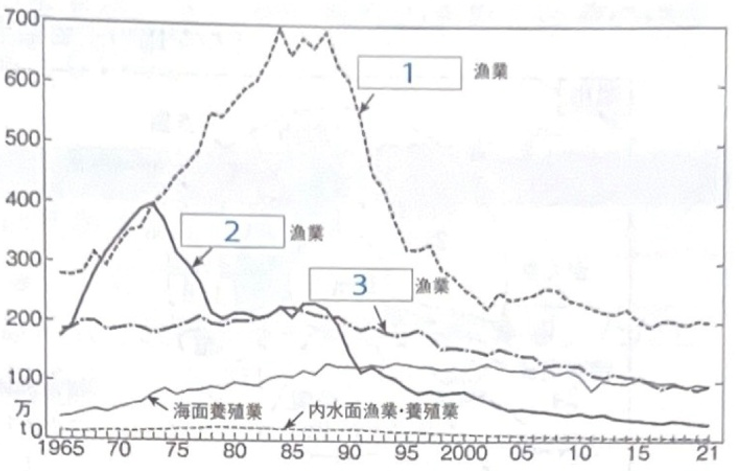
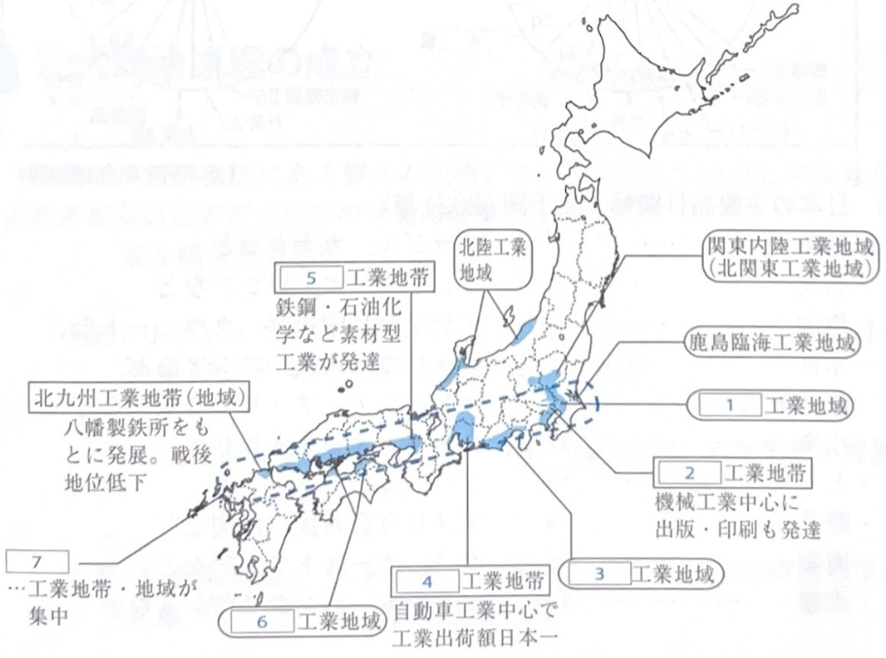

地理
世界の農業
- 混合農業 … 小麦・ライ麦などの穀物や飼料作物の輪作と、家畜の飼育とを組み合わせた農業。
- 地中海式農業 … 地中海性気候の地域でみられる。夏は乾燥に強いオリーブやオレンジ、ブドウなどの果樹を、冬に小麦などを栽培。
- 園芸農業 … 都市向けの草花や果実、野菜などを栽培する集約的農業。
- プランテーション農業 … 熱帯・亜熱帯地域で大規模に栽培する農業。欧米諸国によって開発され、単一耕作（ モノカルチャー ）であることが多い。
- オアシス農業 … 乾燥地域で行われている集約的な農業。人工的な灌漑を利用して、なつめやしや綿花などが栽培される。
- 焼畑農業 … 主に熱帯の内陸でみられる自給的な農業。森林や草原を焼いた灰を肥料とし、キャッサバやヤムイモなどの根菜類を栽培。
世界の鉱産資源とエネルギー
次の図は、エネルギー資源と鉱産資源の産出量に占める主産国の割合を示している（2019-2021年データ）。

- グラフ１：原油
- グラフ２：石炭
- グラフ３：天然ガス

- 鉄鉱石 (4)：オーストラリア
- 鉄鉱石 (5)：中国
- 銅鉱 (6)：チリ
- 銀鉱 (7)：メキシコ
日本の農業
農業技法
- 促成栽培 … 温室などを利用して農産物の生育を促進し出荷時期を早める方法。高知平野、宮崎平野など。
- 園芸農業 … 都市への出荷を目的として果樹・花卉などを集約的に栽培する農業。大都市近郊で行われる場合、特に 近郊農業という。
- 高冷地農業 … 冷涼な気候を利用して行われる農業。中央高地での高原野菜（レタス、キャベツ、はくさい）栽培が有名。
日本の漁業

漁獲量の推移
1970年代後半以降、漁獲量は減少傾向。特に、沖合漁業(1)、遠洋漁業(2)の衰退が著しい。
※グラフ3は沿岸漁業。
育てる漁業
- 養殖漁業 … 人工のいけすなどで稚魚や稚貝を育て、成長させてから獲る漁業。
- 栽培漁業 … 人工的にふ化させた稚魚や稚貝をある程度育ててから海や川に放流し、成長してから獲る漁業。
日本の工業

- 1：京葉工業地域
- 2：京浜工業地帯（機械工業中心、出版・印刷も発達）
- 3：東海工業地域
- 4：中京工業地帯（自動車工業中心で工業出荷額日本一）
- 5：阪神工業地帯（鉄鋼・石油化学など素材型工業が発達）
- 6：瀬戸内工業地域
- 7：太平洋ベルト（工業地帯・地域が集中）